Kek - Pasta Tarifleri
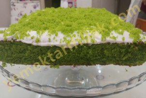
Kullanılan Malzemeler
Kek için:
3 yumurta
20 yaprak ıspanak
1.5 su bardağı şeker
1 çay bardağı sıvı yağ
2 su bardağı un
1 paket vanilya
1.5 paket kabartma tozu
Keki ıslatmak için:
1 bardak süt
Üzeri için:
1 paket krem şanti
1 su bardağı süt
Ispanaklı Yaş Pasta Yapılışı
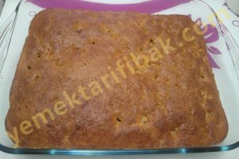
Kullanılan Malzemeler
3 yumurta
1 su bardağı şeker
1 çay bardağı süt
6 tane kuru incir
1 çay kaşığı tarcın
1 paket kabartma tozu
1 paket vanilya
1 çay bardağı çekilmiş ceviz veya fındık
1,5 su bardağı un
Muhallebisi için:
4 su bardağı süt
3 çorba kaşığı un
2 su bardağı nişasta
6 yemek kaşığı şeker
1 paket vanilya ve 2 yemek kaşığı tereyağ
Şerbeti için:
1 su bardağı ılık su
1 tatlı kaşığı nescafe
2 çorba kaşığı şeker
Üzeri için:
kakao
İncirli Pasta Yapılışı
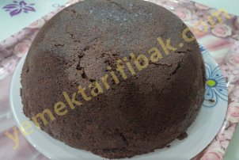
Kullanılan Malzemeler
4 yumurta
1 su bardağı toz şeker
2 yemek kaşıgı sıvıyağ
1 su bardağı
3 yemek kaşığı kakao
1 vanilya
1 paket kabartma tozu
Keki ıslatmak için
1 çay bardağı süt
Kreması için:
5 su bardağı süt
1 su bardağı silme un
1 yemek kaşığı nişasta
1 yumurta sarısı
1 paket vanilya
50 gr tereyağı
1 su bardağı toz şeker
1,5 su bardağı Hindistan cevizi
Üzeri için:
1 poşet kremşanti
1 su bardağı soğuk süt
Kümbet Pasta Yapılışı
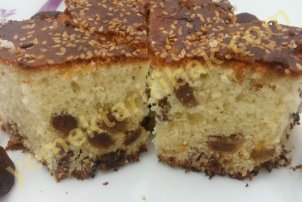
Kullanılan Malzemeler
3 yumurta
1 su bardağı sıvıyağ
1 su bardağı süt
1 su bardağı şeker
3 su bardağı un
1 paket kabartma tozu
1 paket vanilya
5-6 tane küp doğranmış kuru kayısı
1 fincan kuru üzüm
1 avuç iri çekilmiş ceviz
Üzeri için:Susam
Kuru Kayısı Ve Üzümlü kek Yapılışı
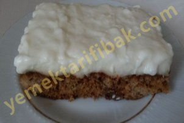
Kullanılan Malzemeler
4 tane yumurta
1 su bardağı şeker
6-7 tane incir
1 su bardağı dövülmüş ceviz(biraz suda beklet yumuşasın sonra doğra)
1 su bardağı un
1 tane kabartmatozu
Keki ıslatmak için:
1,5 su bardağı su
2 tane üçü bir arada neskafe
Kreması için:
1 kg süt
5 yemek kaşığı şeker
2 yemek kaşığı nişasta
2 yemek kaşığı un
50 gr margarin
1 paket krem şanti
İncirli Kremalı Tatlı Yapılışı
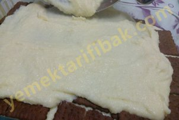
Kullanılan Malzemeler
2 litre süt
16 yemek kaşığı irmik(2 su bardağı)
2 su bardağı şeker,
1 paket vanilya
2 yemek kaşığı tereyağı.
Arası için:Kakaolu pötibör bisküvi
Üzeri İçin:
Hindistan cevizi
Çikolata sosu
Kakao bisküvili İrmikli sütlü pasta Yapılışı
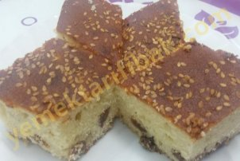
Kullanılan Malzemeler
3 tane yumurta
1 su bardağı toz şeker
1 su bardağı süt
Yarım su bardağı sıvı yağ
1 paket kabartma tozu
1 paket vanilya
yarım su bardağı kuru üzüm
un
Kuru Üzümlü Kek Yapılışı
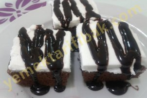
Kullanılan Malzemeler
4 adet yumurta
1 su bardağı toz şeker
yarım çay bardağı süt
yarım çay bardağı sıvıyağ
3 yemek kaşığı kakao
1 paket vanilya
1 paket kabartma tozu
1 veya 2 su bardağı un
Keki Islatmak İçin:
2 su bardağı soğuk süt
Üzeri İçin:
1 paket kremşanti
1 su bardağı soğuk süt
1 paket çikolata sosu
Ağlayan Pasta Yapılışı
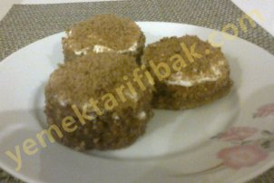
Kullanılan Malzemeler
- 6 yumurta
- 5 fincan şeker
- 7,5 fincan un
- 1,5 fincan ılık su
- 1 paket krem şantı
- 1 paket vanilya
- 1 paket kakao
- 1 paket kabartma tozu
şerbeti için
- 2 su bardağı su
- 2 su bardağı şeker
kreması için
-1/2 kilo süt
-1/2 su bardağı şeker
-1/2 su bardağı un
Eti Puf Pasta Yapılışı
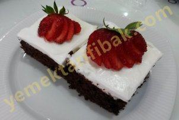
Kullanılan Malzemeler
4 yumurta
1 su bardağı şeker
1 su bardağı un
4 yemek kaşığı su
1 paket kakao (3-4 yemek kaşığı kadar )
1 paket vanilya
1 paket kabartma tozu
1 paket kremşanti
1 su bardağı soğuk süt (krem şantinin hazırlanması için)
1,5 su bardağı süt (piştikten sonra kekin üzerine)
Kakaolu Islak Sünger Pastası Yapılışı
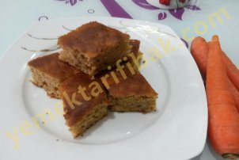
Kullanılan Malzemeler
4 yumurta
1,5 su bardağı toz şeker
1 su bardağı süt
yarım su bardağı sıvı yağ
1 su bardağı rende havuç(3 tane orta boy havuç)
Aldığı kadar un(3 su bardağı kadar)
1 paket vanilya
2 paket kabartma tozu
1,5 su bardağı çekilmiş ceviz
2 tatlı kaşığı tarçın
Havuçlu Cevizli Tarçınlı Kek Yapılışı
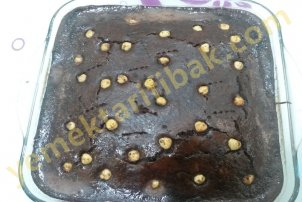
Kullanılan Malzemeler
3 yumurta
1,5 su bardağı şeker
2 su bardağı süt
1 su bardağı sıvı yağ
4 yemek kaşığı kakao
1 paket vanilya
1 paket kabartma tozu
3 su bardağı un (Yumurtaların büyüklüğüne ve kullanılan bardakların ölçüsüne göre miktar değişebiliyor,o yüzden azar azar eklemenizde fayda var.)
Islak Kek Yapılışı
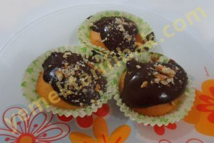
Kullanılan Malzemeler
3 yumurta
1 su bardağı toz şeker
1 su bardağı süt
1 su bardağı sıvıyağ
1 paket kabartma tozu
1 paket vanilya
Aldığı kadar un
Badem
Hazır puding
NOT: Ben kakaolu puding kullandım, dilerseniz farklı bir pudingle hazırlayabilirsiniz.
Bademli Cupcake Yapılışı
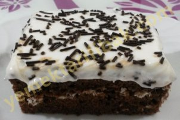
Kullanılan Malzemeler
3 yumurta
1 su bardağı şeker
1 su bardağı ılık süt
1 su bardağı sıvıyağ
3 yemek kaşığı kakao
4 yemek kaşığı nişasta
1 paket vanilya
1 paket kabartma tozu
3 su bardağı un
1 çay bardağı hindistan cevizi
Sosu için:
1 su bardağı süt
yarım su bardağı toz şeker
yarım su bardağı sıvı yağ
2 çorba kaşığı kakao
Üzer için:
krem şanti
Hindistan Cevizli Islak Kek Yapılışı
Diğer Tarifler